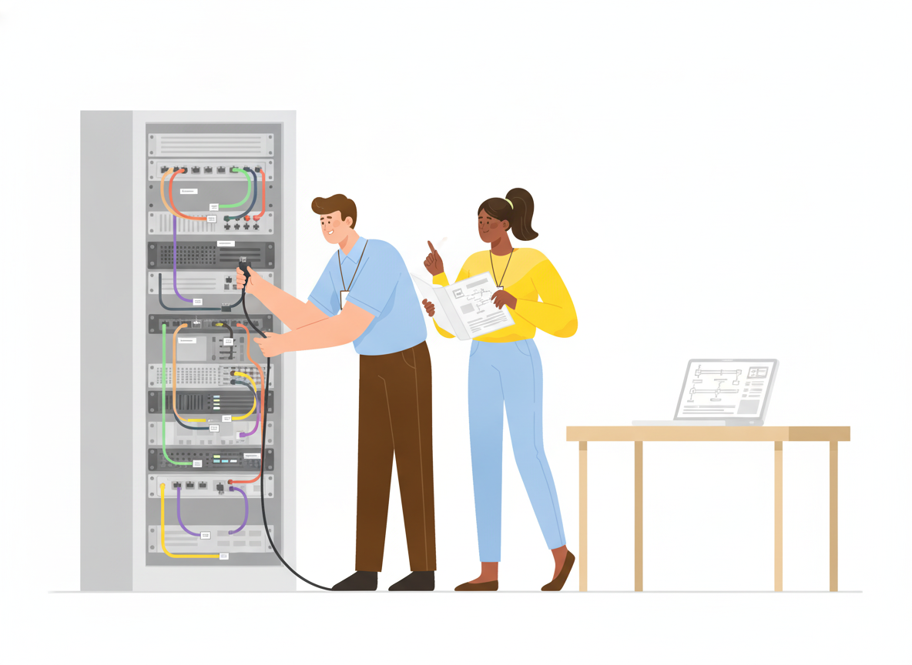

IT Documentation: What to Document and How to Keep It Current

It's 2 a.m., a core service is down, and the one person who knows how it was set up is on a plane. Every IT team has a version of this story. The fix is rarely more talent. It's better IT documentation: written down, easy to find, and still true.
This guide covers what IT documentation is, the seven documents worth writing first, a simple template for each page, and a maintenance routine that keeps the whole set from going stale.
What is IT documentation?
IT documentation is the written record of how an organization's technology is set up, how it is run, and how to fix it when it breaks. It covers systems, networks, access, and the step-by-step procedures your team follows. Its job is to make sure nobody has to rely on memory, or on one specific person, to keep things running.
Good IT documentation serves two audiences. The first is your own team: the on-call engineer, the new hire, the contractor covering a holiday. The second is everyone else in the company, who need clear answers to everyday questions like "How do I connect to the VPN?" without opening a ticket.
Why IT documentation pays for itself
Documentation feels like overhead until the day you need it. Three moments make the case.
During incidents. Google's Site Reliability Engineering book reports that recording best practices ahead of time in a "playbook" produces roughly a 3x improvement in mean time to repair, compared with "winging it." When systems fail, written steps beat improvisation.
When people leave. Knowledge that lives in one person's head walks out the door with them. TechTarget's guidance on turnover risk recommends a central documentation repository, version control, and exit interviews that focus on system knowledge: undocumented processes, critical contacts, and workarounds. The best time to capture that knowledge is long before anyone resigns.
When something changes. You can't tell whether a server has drifted from its intended setup if nobody wrote the intended setup down. A documented baseline gives you something to compare against.
The 7 types of IT documentation every team needs
You don't need to document everything at once. Start with the documents that would hurt most to lose. Here is a practical core set.
1. Asset inventory
A list of every device, server, application, and cloud service your team supports. For each one, record what it is, where it lives, who owns it, and what depends on it. Everything else in your documentation points back to this list, so build it first.
2. System documentation and configuration baselines
For each important system, describe how it is configured and why. NIST defines a baseline configuration as a documented set of specifications for a system that has been formally reviewed and agreed on at a given point in time, and which can be changed only through change control. In plain terms: write down the approved setup, and update the record every time an approved change goes in.
3. Network documentation
Network documentation works best in two layers. A one-page overview shows the big picture: sites, internet links, firewalls, and how they connect. Detailed pages then cover IP ranges, VLANs, device configurations, and provider contacts for deep troubleshooting. Most questions only need the overview, so keep it short and up to date.
4. Access and accounts
Who can access what, who approves new access, and how access is removed when someone leaves. Record where credentials are stored and who manages them, but never paste passwords into documentation pages. Point to your password manager instead.
5. IT SOPs and how-to procedures
Standard operating procedures cover the tasks your team does again and again: onboarding a new employee's laptop, resetting multi-factor authentication, patching servers, restoring a file from backup. If a task happens more than once a month, or goes badly when done wrong, it deserves an SOP. Our standard operating procedure guide walks through how to write one.
6. Runbooks and troubleshooting guides
Runbooks are the step-by-step responses to known problems and alerts: what you see, what to check, and what to do. They're the "playbooks" from the Google SRE example above. For a deeper walkthrough, see our guide to writing runbooks.
7. Disaster recovery and contingency plans
What happens if a site, a key system, or a critical vendor becomes unavailable? Your recovery plan answers that: priorities, recovery steps, contact lists, and where the backups are. NIST's Contingency Planning Guide (SP 800-34) is a useful free reference here, and it includes a business impact analysis template and plan templates you can adapt.
A simple IT documentation template
Consistency matters more than length. When every page follows the same shape, people know where to look. Use this structure for system pages, SOPs, and runbooks alike:
- Title: a plain description of the task or system ("Reset a user's MFA device").
- Purpose: one or two sentences on what this page is for and when to use it.
- Owner and review date: who keeps this page accurate, and when it was last checked.
- Before you start: required access, tools, and warnings.
- Steps or details: numbered steps for procedures; short sections for system pages.
- How to confirm it worked: what "done" looks like.
- If something goes wrong: escalation contacts and related pages.
- Change history: what changed, when, and why.
Keep each page focused on one system or one task. A single 40-page "IT handbook" is hard to search and harder to keep current. Twenty short, linked pages are easier on both counts.
IT documentation best practices that keep docs current
Outdated documentation can be worse than none, because people trust it. These habits keep your docs accurate.
Give every page an owner
A page without an owner slowly goes stale. Assign one person per page or section, and show their name on the page so readers know who to ask.
Update docs as part of the work, not after it
Make documentation part of the definition of done. A change request isn't closed until the baseline is updated. A new laptop isn't handed over until it's in the asset inventory. An incident isn't closed until the runbook reflects what you learned.
Review on a schedule
Set a review date on every page. Critical pages, like recovery plans and access procedures, deserve a review every quarter. Less critical pages can wait longer. When a review date passes, the owner either confirms the page or fixes it.
Use version history and approvals
Being able to see what changed and roll back is as useful for documentation as it is for code. For sensitive pages like access policies or recovery plans, add an approval step so changes are reviewed before they go live.
Write for the person reading at 2 a.m.
Short sentences. Numbered steps. One action per step. Screenshots where a screen is confusing. Your reader is tired, stressed, and may never have touched this system before.
Keep it in one searchable place
Documentation spread across shared drives, chat threads, and personal notes isn't documentation. It's a scavenger hunt. Pick one home, make it searchable, and link everything from there.
Internal vs. end-user IT documentation
Some IT documentation is for your team only: network maps, configurations, and access procedures. Some is for everyone in the company: how to set up email on a phone, how to request software, how to connect to the VPN.
Both matter, but the second kind reduces ticket volume. When employees can find the answer themselves, your team spends less time on repeat requests. The key is to control who sees what. Internal pages stay private to the IT team, while self-service guides are open to the whole company.
How Sonat helps IT teams document
Sonat is built for teams who want clear, published documentation without technical setup. Your team can draft in Google Docs and publish to a searchable site, so writing IT documentation feels like writing any other document. Every change is kept in an unlimited version archive, approval workflows review sensitive pages before they go live, and private manuals keep internal pages restricted to the right people. End users can leave feedback on any topic, so you hear when a guide is unclear.
See how Sonat supports IT documentation, or start on the free plan. No credit card is required.
Conclusion
Good IT documentation isn't a giant manual written once and forgotten. It's a small set of focused, owned pages: an inventory, baselines, network maps, access rules, SOPs, runbooks, and a recovery plan, each kept current as part of everyday work. Start with the document you'd miss most during your next outage, write it this week, and give it an owner. Then do the next one.